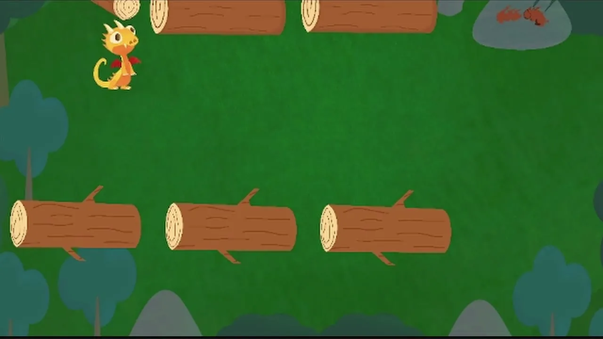
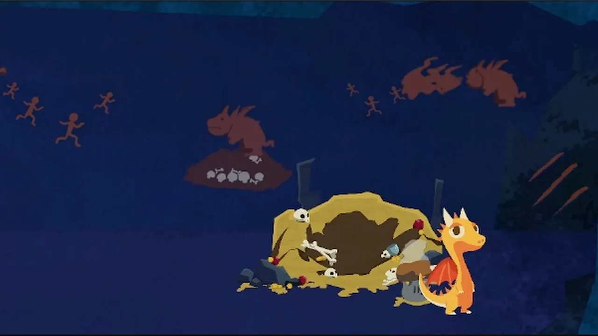
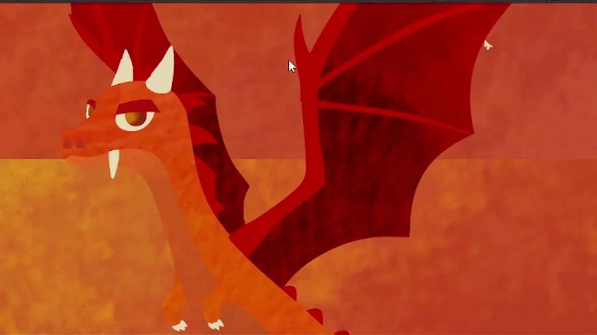
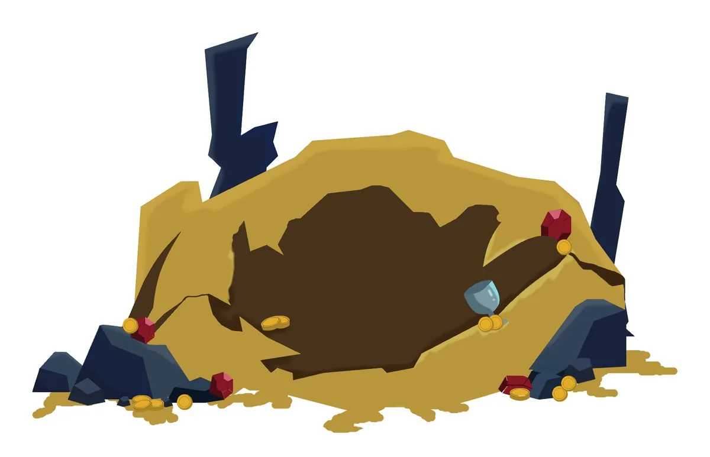

Video game · Group project
La odisea de Lyro
Lyro is a dragon who has to cross three islands to discover what he will become.
Project details
- Project
- La odisea de Lyro
- Context
- Multimedia Design Workshop 4 · UNLP · 2025
- Team
- 6 people
- Tech
- Unity
Type:AppWebGame
I did:ProgrammingIllustrationSound
The story
On each island Lyro grows and his abilities (flying, blowing and pushing) evolve: in the forest he's a clumsy hatchling, on the mountain a teenager and on the volcanic island an adult.
The ending depends on how you solve the obstacles: Lyro can end up as the feared dragon everyone expects, or the friendly dragon he wants to be.
My role: I programmed the second and third levels with a teammate, illustrated in-game objects as vectors, and found and created the sounds.
The journey
- Forest: Lyro hatches and learns to push logs to clear the way.
- Caves: between islands he finds nests where he has to sleep to grow and move on to the next level.
- Ice: now he can fly and breathe fire to melt the obstacles.
- Volcano: what you decide with the other dragons determines whether he ends up feared or friendly.






What I illustrated
In-game objects and effects I built as vectors, based on moodboards.

